Contenido
[ocultar]Kit Robots
|
|
|


Histórico de Robots
2011
 |
Mini-Skybot Robot educacional libre e imprimible |

|
Cube3 Robot modular: Cube3. Topología 1D y movimiento unidimensional. Formado por 3 módulos |
2010
| Minicube-I Configuración mínima de dos módulos, capaz de moverse hacia adelante y atrás. | |

|
Unimod Módulo mínimo capaz de oscilar de manera autónoma. A partir de unimod se construyen robots modulares de mayor tamaño, añadiéndole más módulos u otros Unimods. |
| |
Módulos MY: Módulos para la construcción de robots modulares. Compatibles con los Y1 |
2008
| 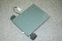 |
FlatBot: Plataforma móvil plana y sencilla. Ideal para convertir un portátil en un robot |
|
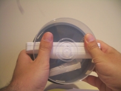 |
Tarri-wheel: Volante inalámbrico construido a partir del mando de la wii y una tarrina de CDs |
| 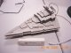 |
Star Destroyer: Destructor de Star Wars movido con el wiimote |
| 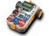 |
Ma-vin: Análisis del Robot educacional de la empresa Hitec |


2007
| 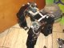 |
PuchoBot II Segunda generación de Puchobot. |

2006
| 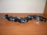 |
Hypercube. Robot modular de tipo gusano con 8 módulos que puede moverse en dos dimensiones. |

2005
| 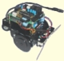 |
Skybot: Robot "Hola mundo" para iniciarse en la robótica. |
| 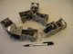 |
MiniCube. Robots modulares con el número mínimo de módulos necesario para desplazarse. |


2004
| 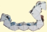 |
Cube Revolutions Robot modular tipo "gusano" con 8 servos. Tercera generación. |
| 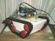 |
Microbot Siko Robot con orugas de muy bajo coste para iniciarse en el mundo de la microbótica. |
| Servo Cañón | Cañon con dos grados de libertad. |


2003
| 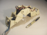 |
Cube Reloaded Robot modular tipo gusano de 4 servos. Segunda generación del robot Cube. |
| 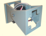 |
Módulos Y1 Módulos mecánicos para la construcción de robots modulares conectados en cadena, como por ejemplo gusanos o serpientes. |
| orientable | Plataforma orientable hacia la luz. |


2002
| 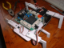 |
Sheila Robot Hexápodo con 3 servos. |
| Labobot | Control de servos a través de una FPGA, usando la tarjeta Labomat |

2001
| 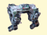 |
PuchoBot Robot cuadrúpedo, con 12 articulaciones. |
| 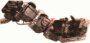 |
Cube Primera generación del robot ápodo Cube. |


1997
| 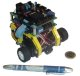 |
Microbot Tritt. Robot muy sencillo, para iniciarse en el mundo de la microbótica |